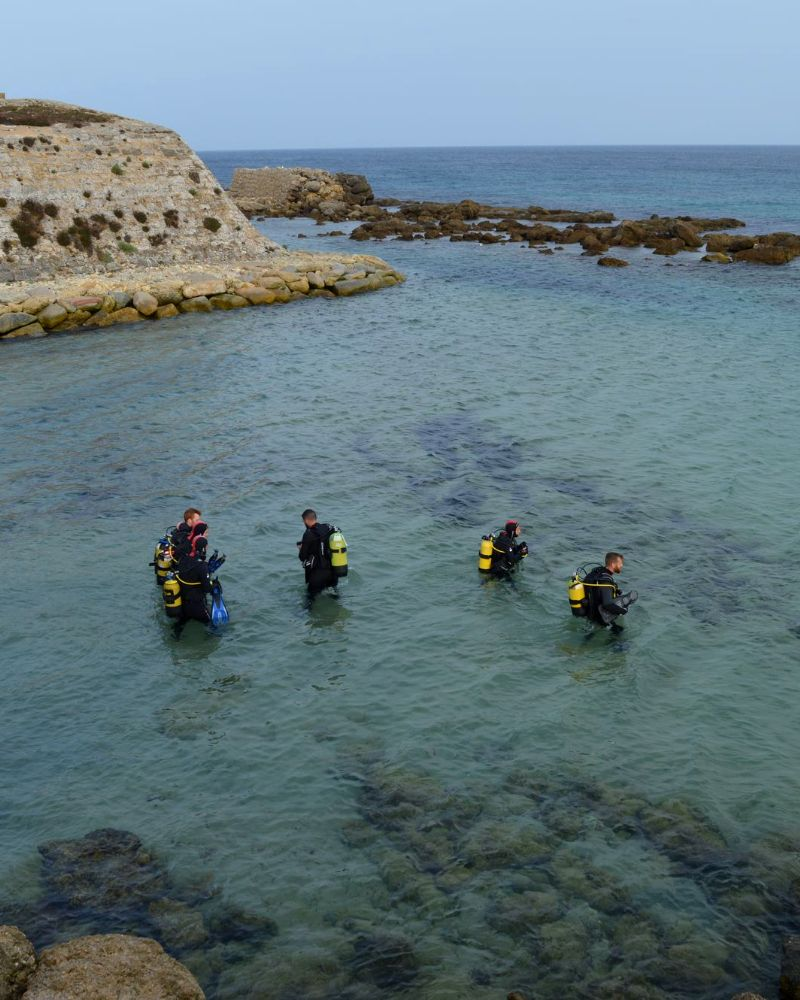
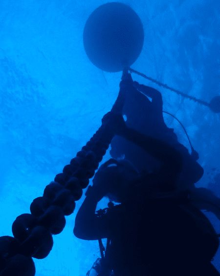

0 m Courses
Let us take you further!
Every PADI level, from your first certification to instructor, in one place.
Think of it as a ladder that leads down instead of up. Start in the shallows, take each rung when you feel ready, and go as deep as you like. We have been teaching divers in Ayia Napa since 1982, and we will be beside you at every step.

The course ladder
One rung at a time
Beginner at the surface, professional at the bottom. Climb down at your own pace, stop at the rung that suits the diving you love, or keep going all the way to instructor.
-
Beginner
PADI Scuba Diver /
Open Water DiverWhere every diver begins: your first PADI certifications, learned step by step with an instructor beside you.
Ask about this course -
Building experience
PADI Adventure Diver /
Advanced Open Water DiverThe natural next step once you are certified: more time underwater, new kinds of diving and growing confidence.
Ask about this course -
Care and rescue
Emergency First Response /
PADI Rescue DiverFirst aid and rescue training, for divers who are ready to look out for others as well as themselves.
Ask about this course -
Committed divers
PADI Master Scuba Diver /
DivemasterThe deeper rungs, where diving for the love of it meets the path towards diving as a profession.
Ask about this course -
Professional
PADI Assistant Instructor /
Instructor Development CourseThe foot of the ladder: train to teach diving at our PADI 5 Star Instructor Development Centre.
Your next step
Not sure which rung is yours?
Tell us what you have done so far and where you would like to go. We will suggest your next step and plan it with you.
- PADI 5 Star Instructor Development Centre
- Full-time PADI Course Director
- Multilingual instructors
- Teaching divers in Ayia Napa since 1982
